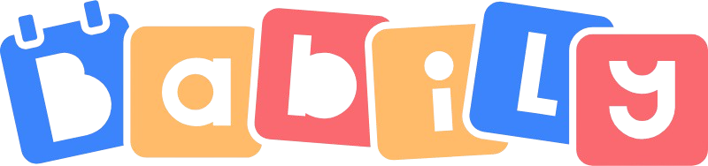

01
Audiences et ciblage
Vos campagnes touchent-elles les personnes les plus susceptibles de s'intéresser à votre offre ?
- Recherche d'audience
- Targeting et segmentation
- Retargeting d'audiences
- Objectifs de campagne
Des audiences choisies avec précision, des messages qui marquent, des résultats mesurés : chaque campagne est pensée pour faire avancer votre activité.

Vos campagnes touchent-elles les personnes les plus susceptibles de s'intéresser à votre offre ?
Vos publicités arrêtent-elles le scroll et donnent-elles envie d'interagir ?
Tirez-vous le meilleur parti de votre budget publicitaire ?
Tout ce qu'il faut pour comprendre vos performances sur les réseaux sociaux et construire des campagnes qui progressent dans le temps.
Une analyse détaillée de vos campagnes, audiences, visuels, suivi des conversions, budgets et structure de compte.
Des recommandations claires, centrées sur les changements qui auront le plus d'impact sur vos résultats.
Les audiences, messages et visuels qui génèrent le plus de réactions, et ceux qui freinent vos performances.
Nous parcourons ensemble les résultats, expliquons les opportunités et validons les prochaines étapes pour vos campagnes.
Tout dépend de votre cible, de votre objectif et de la taille de l'audience visée. LinkedIn impose un budget minimum d'environ 10 € par jour et par campagne, et ses coûts sont plus élevés que sur les autres réseaux : c'est le prix d'un ciblage très précis par fonction, secteur ou taille d'entreprise. Sur Facebook et Instagram, il est possible de démarrer avec un budget plus modeste, et le coût par contact est généralement plus faible. Dans les deux cas, un budget trop limité empêche les algorithmes d'apprendre et de collecter assez de données pour optimiser vos campagnes. Nous définissons ensemble un budget réaliste au regard de vos objectifs, puis l'ajustons selon les premiers résultats. Ce budget publicitaire est réglé directement aux plateformes, il reste distinct des honoraires de gestion.
LinkedIn convient pour toucher des décideurs B2B. Meta, avec Facebook et Instagram, sert surtout la notoriété et le reciblage. Les deux sont souvent complémentaires.
Oui pour la notoriété et le reciblage des visiteurs de votre site. Meta est en revanche moins précis que LinkedIn pour cibler une fonction ou un secteur très spécifique.
Les premiers résultats arrivent en quelques semaines. Il faut en général un à trois mois pour stabiliser les coûts. En B2B, les effets se mesurent aussi sur la durée.
Partagez-nous vos réseaux sociaux, nous vous faisons un premier retour et une proposition sur mesure.